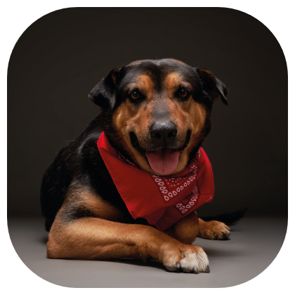

Inicio
Perros en adopción
La mayoria de nuestros amigos caninos fueron encontrados en las calles de Santiago, fueron vacunados y recibieron con anterioridad el mayor cuidado, para ir a una familia mejor
Perritos que te esperan
Rocky
Scooby

Simba
Max